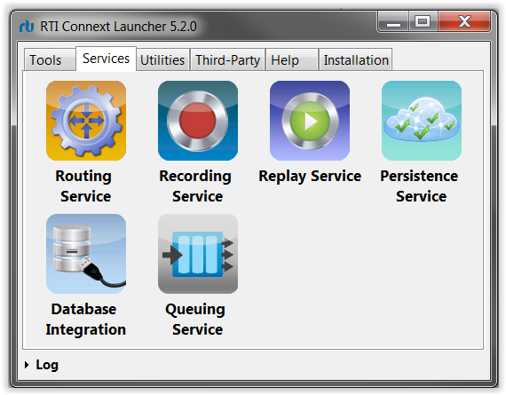

Tutorial
This step-by-step tutorial will guide you through a sample
scenario.
This tutorial assumes Connext Messaging has already been
installed on your system.
- Confirm
Admin Console is automatically discovering and joining domains. You can
check this by opening the Preferences dialog by clicking on this button
 .
.
- Start Routing Service using RTI Connext Launcher: On Windows systems, Launcher can be started through the Start Menu: select Start -> All Programs -> RTI Connext <version>-> RTI Launcher <version>. On Linux systems, you can start Launcher by running [RTI Connext installation directory]/bin/rtilauncher. (More details on Launcher are provided in the RTI Launcher Getting Started Guide.)

- In Launcher, open the Services tab and click on Routing Service. Keep all
the default settings. In the Configuration drop-down list, select
"default" and click Run.
- Start
Recording Service: Go to Launcher's Services tab and click on Recording
Service. Keep all the default settings. In the Configuration drop-down
list, select "default" and click Run.
- Start two
instances of Shapes Demo: Go to Launcher's Tools tab and click on
Shapes Demo. The Shapes Demo application should start. Ensure that all the
default quality of service settings are being used.
Go back to Launcher and start another instance of Shapes Demo. This time, in the configuration dialog, specify 1 for the domain and click start.
We will use these demo windows in a later step.
- Compile
the Distributed Logger Example Application: We will use the example "Hello_direct_usage". The example is located with
the other RTI-supplied examples. You can choose
either C, CPP or Java; any of
these languages will work for this tutorial. Follow the README file
provided in the example folder to compile and run the application.
When the application starts, you should see the following:
In the next step of the tutorial, we'll use Admin Console to monitor all
the components that we started here. Note that you can start these components
on separate computers, but for convenience we recommend you to start them on
the same machine.